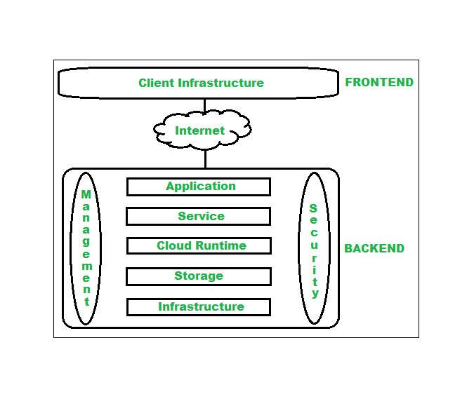

Cloud Computing
@Debuggers
Distributed Computing and Virtualization
1. Cloud Fundamentals
Cloud Definition
Cloud computing refers to the delivery of computing services over the internet. These services include servers, storage, databases, networking, software, and more. Users can access and use these services on a pay-as-you-go basis.
Evolution of Cloud Computing
- Mainframe Era: Centralized computing with terminals connected to a mainframe.
- Client-Server Era: Introduction of networked computers and local servers.
- Virtualization Era: Virtual machines and resources pooling.
- Cloud Era: Scalable, on-demand services provided over the internet.
Cloud Architecture
- Front-end: The client-side, which includes the user interface and applications used to access cloud services.
- Back-end: The cloud infrastructure, including servers, storage, and data centers.
- Middleware: Software that connects different applications or services and handles the communication between the front-end and back-end.
Cloud Applications
- Software as a Service (SaaS): Applications delivered over the internet (e.g., Gmail, Office 365).
- Platform as a Service (PaaS): Platforms providing runtime environments for development and deployment (e.g., Heroku, Google App Engine).
- Infrastructure as a Service (IaaS): Virtualized computing resources over the internet (e.g., AWS EC2, Google Compute Engine).
Deployment Models
- Public Cloud: Services offered over the public internet and available to anyone (e.g., AWS, Azure).
- Private Cloud: Dedicated to a single organization, providing more control and security.
- Hybrid Cloud: Combination of public and private clouds, allowing data and applications to be shared between them.
- Community Cloud: Shared by several organizations with common interests or requirements.
Service Models
- Infrastructure as a Service (IaaS): Provides virtualized computing resources over the internet.
- Platform as a Service (PaaS): Provides a platform allowing customers to develop, run, and manage applications.
- Software as a Service (SaaS): Provides software applications over the internet, accessible via a web browser.
2. Virtualization
Issues with Virtualization
- Performance Overheads: Virtual machines may experience reduced performance compared to physical machines.
- Resource Contention: Multiple VMs sharing resources can lead to contention and reduced efficiency.
- Security Risks: Vulnerabilities in hypervisors can potentially affect multiple VMs.
- Complexity: Managing and configuring virtual environments can be complex.
Virtualization Technologies and Architectures
- Type 1 Hypervisors: Also known as bare-metal hypervisors, they run directly on the hardware (e.g., VMware ESXi, Microsoft Hyper-V).
- Type 2 Hypervisors: Also known as hosted hypervisors, they run on top of an existing operating system (e.g., VMware Workstation, Oracle VirtualBox).
- Containerization: A form of virtualization that involves running applications in isolated containers (e.g., Docker, Kubernetes).
Internals of Virtual Machine Monitors/Hypervisors
- Virtual Machine Monitor (VMM): Manages the execution of virtual machines. It abstracts the hardware and provides virtualized resources.
- Hypervisor: A software layer that enables multiple virtual machines to share the same physical hardware.
- Virtualization Layer: Provides virtualized hardware to VMs, including CPU, memory, storage, and network resources.
Virtualization of Data Centers
- Server Virtualization: Divides physical servers into multiple virtual servers.
- Storage Virtualization: Abstracts physical storage to appear as a single storage pool.
- Network Virtualization: Abstracts network resources to create virtual networks over physical networks.
Issues with Multi-Tenancy
- Isolation: Ensuring that one tenant's data and operations are isolated from others.
- Security: Protecting against attacks that may target shared resources.
- Resource Management: Balancing resources among multiple tenants to avoid performance degradation.
- Compliance: Adhering to regulatory requirements in a shared environment.
Cloud Computing Systems and Issues
1. Study of Cloud Computing Systems
Cloud Computing Systems provide on-demand computing resources over the internet. Key platforms include:
- Amazon EC2 (Elastic Compute Cloud): A scalable virtual server environment that allows users to run applications on a cloud infrastructure.
- Amazon S3 (Simple Storage Service): A scalable object storage service for storing and retrieving any amount of data at any time.
- Google App Engine: A platform-as-a-service (PaaS) offering for building and deploying applications on Google’s infrastructure.
- Microsoft Azure: A cloud computing platform that offers a range of services including virtual machines, storage, and application hosting.
2. Build Private/Hybrid Cloud Using Open Source Tools
Private and Hybrid Clouds provide customizable and scalable cloud solutions. Open source tools for building these clouds include:
- OpenStack: An open-source platform for creating and managing public and private clouds.
- CloudStack: An open-source cloud computing platform for creating and managing large-scale cloud environments.
- Proxmox VE: An open-source virtualization management platform for managing private cloud environments.
3. Deployment of Web Services from Inside and Outside a Cloud Architecture
Web Services Deployment involves making applications available over the internet or an intranet. Key aspects include:
- Inside Cloud: Deploying web services within a private or hybrid cloud to leverage internal resources and maintain control.
- Outside Cloud: Deploying web services on public cloud platforms to take advantage of scalability and global reach.
4. MapReduce and Its Extensions to Cloud Computing
MapReduce is a programming model used for processing large datasets in a distributed manner. In cloud computing, it is used with frameworks such as:
- Hadoop MapReduce: An implementation of MapReduce that operates within the Hadoop ecosystem.
- Google MapReduce: Part of Google’s cloud platform for large-scale data processing.
Extensions to MapReduce in cloud computing include:
- YARN (Yet Another Resource Negotiator): A resource management layer for Hadoop that allows for more flexible and efficient use of resources.
- Apache Spark: An extension of MapReduce providing in-memory processing for faster data analysis.
5. HDFS and GFS
HDFS (Hadoop Distributed File System) and GFS (Google File System) are distributed file systems designed for handling large volumes of data:
- HDFS: Provides fault tolerance and scalability through data replication across a cluster of machines.
- GFS: Designed for storing large files and is optimized for high-throughput access.
6. Interoperability and Service Monitoring
Interoperability refers to the ability of different systems and organizations to work together effectively. Issues and approaches include:
- Issues with Interoperability: Compatibility problems between different cloud services and platforms.
- Vendor Lock-in: Dependence on a single cloud provider, which can make it difficult to switch providers or integrate with other systems.
- Interoperability Approaches: Using open standards, APIs, and cloud management tools to ensure compatibility between different systems.
7. SLA Management, Metering Issues, and Report Generation
SLA (Service Level Agreement) Management involves ensuring that cloud services meet agreed-upon performance and availability standards. Key aspects include:
- SLA Management: Monitoring service performance and ensuring compliance with SLA terms.
- Metering Issues: Tracking and managing resource usage to ensure accurate billing and efficient resource allocation.
- Report Generation: Creating reports on service performance, usage, and compliance with SLAs.
Some Important Questions
1) Describe cloud computing and its application.
→ Cloud computing is the delivery of computing services—including servers, storage, databases, networking, software, analytics, and intelligence—over the internet ("the cloud"). This allows users and organizations to access and use resources without the need to own and maintain physical infrastructure. It offers flexibility, scalability, and cost-effectiveness, making it a key technology in modern IT.
Applications of Cloud Computing:
- Data Storage and Backup: Cloud services like Google Drive, Dropbox, and Amazon S3 allow individuals and organizations to store and back up data online, making it accessible from any location and secure from local hardware failures.
- Software as a Service (SaaS): Services like Microsoft 365, Salesforce, and Zoom are provided over the cloud, allowing users to access software applications through a web browser without needing to install or maintain them locally.
- Infrastructure as a Service (IaaS): Platforms like AWS, Microsoft Azure, and Google Cloud provide virtualized computing resources over the internet, allowing companies to scale their infrastructure on-demand without purchasing hardware.
- Platform as a Service (PaaS): Services like Heroku, Google App Engine, and AWS Elastic Beanstalk offer a platform for developers to build, test, and deploy applications without worrying about the underlying infrastructure.
- Machine Learning and AI: Cloud services like Google Cloud AI and AWS AI provide frameworks and tools for training and deploying machine learning models, making AI accessible to developers without the need for specialized hardware.
- Disaster Recovery: Cloud computing enables businesses to implement cost-effective disaster recovery solutions, ensuring that critical data and systems can be recovered quickly in case of a disaster.
- Content Delivery Networks (CDNs): Services like Cloudflare and AWS CloudFront distribute content to users globally by caching it on multiple servers, reducing latency and improving user experience.
- Internet of Things (IoT): Cloud platforms enable the collection, storage, and analysis of data from IoT devices, facilitating real-time monitoring, automation, and smart systems (e.g., smart cities, connected vehicles).

2) Describe working models for cloud computing.
→ Cloud Development Models (Deployment Models)
Public Cloud: Cloud infrastructure is available to the public over the internet and is owned by a cloud provider. Services are shared among multiple customers.
Use Cases: Ideal for startups, small and medium-sized businesses, and large enterprises seeking cost-effective, scalable solutions.
Private Cloud: Exclusively used by a single organization, either managed internally or by a third party.
Use Cases: Suited for enterprises with high security, compliance, or customization needs, such as in healthcare and finance.
Hybrid Cloud: Combines public and private clouds, allowing data and applications to be shared between them.
Use Cases: Best for organizations that require a balance of flexibility and control, using public resources for non-sensitive workloads and private clouds for sensitive operations.
Community Cloud: Shared infrastructure among multiple organizations with common concerns like compliance or security, managed by one or more participants or a third party.
Use Cases: Useful for collaborative projects, especially in government sectors, institutions, or research initiatives.
Cloud Service Models
These models describe how cloud services are delivered to users:
Infrastructure as a Service (IaaS): Offers virtualized computing resources over the internet, such as virtual machines, storage, and networking. Users manage their software stack while the provider handles the physical infrastructure.
Example Providers: AWS EC2, Microsoft Azure, Google Cloud Compute Engine.
Use Cases: Suitable for organizations that want to outsource hardware management but retain control over software.
Platform as a Service (PaaS): Provides a platform for developers to build, deploy, and manage applications without managing the underlying infrastructure.
Example Providers: Heroku, Google App Engine, AWS Elastic Beanstalk.
Use Cases: Ideal for developers focused on app development, not infrastructure management.
Software as a Service (SaaS): Delivers complete software applications over the internet, accessible via a web browser, with the provider managing all infrastructure and software updates.
Example Providers: Microsoft 365, Salesforce, Google Workspace.
Use Cases: Perfect for businesses and individuals who need ready-to-use cloud-based software without managing installations or updates.
3) Describe cloud computing benefits, risks and limitations.
→ Benefits of Cloud Computing
Cost Efficiency: Cloud computing eliminates the need for large capital expenditures on hardware, software, and infrastructure. Users pay only for the resources they use, reducing upfront costs.
Scalability and Flexibility: Cloud services can be easily scaled up or down based on demand, allowing organizations to adjust resources as their needs change. This elasticity ensures efficient use of resources without over-provisioning.
Accessibility: Cloud services are accessible from anywhere with an internet connection, enabling remote work and global collaboration.
Automatic Updates and Maintenance: Cloud providers manage software updates, security patches, and infrastructure maintenance, ensuring that users have access to the latest technology without manual intervention.
Disaster Recovery and Backup: Cloud services often include built-in data redundancy and backup, helping organizations recover quickly from data loss, system failures, or disasters.
Increased Collaboration: Teams can collaborate in real time through cloud-based platforms, enhancing productivity and communication.
Environmental Sustainability: Cloud providers use optimized data centers that operate more efficiently than individual on-premise setups, potentially reducing energy consumption and carbon footprint.
Risks of Cloud Computing
Security Concerns: Storing data in the cloud means entrusting it to a third-party provider, which can introduce vulnerabilities, such as data breaches or unauthorized access, if the provider's security is compromised.
Compliance and Legal Issues: Data protection laws and regulations vary across regions. Organizations need to ensure that their cloud providers comply with relevant data governance standards to avoid legal issues.
Downtime and Service Availability: Cloud providers may experience outages or downtime, affecting service availability and potentially disrupting operations.
Vendor Lock-in: Switching cloud providers can be complex and costly, leading to vendor lock-in, where customers are dependent on one provider's services, pricing, and ecosystem.
Limited Control: Organizations have less control over cloud infrastructure and rely on the provider for managing and maintaining services. This can be a challenge for businesses that need deep customization.
Data Privacy: The risk of data being stored or processed in jurisdictions with different privacy laws can be concerning for companies handling sensitive or personal data.
Limitations of Cloud Computing
Internet Dependency: Cloud services require a stable and high-speed internet connection. In areas with poor connectivity, access to cloud services may be unreliable or slow.
Performance Variability: Performance can fluctuate based on network bandwidth, provider load, or data center location, leading to latency or slower response times for certain applications.
Limited Customization: Some cloud platforms, particularly in the SaaS and PaaS models, may not offer the deep customization options that on-premise infrastructure can provide.
Potential High Costs at Scale: While cloud services are cost-effective for small-scale operations, as usage grows, costs can accumulate rapidly. For large enterprises with intensive computational needs, maintaining on-premise infrastructure may be more cost-effective in the long run.
Compatibility Issues: Legacy systems or specialized software may not be easily integrated into cloud environments, requiring significant adjustments or replacements.
4) Describe vender lock in problem.
→ Vendor lock-in in cloud computing refers to the difficulty and cost an organization faces when attempting to switch from one cloud service provider to another due to dependencies on proprietary technologies, APIs, or data formats. Cloud providers often use unique platforms and tools that are not easily transferable, making migration complex and expensive. Challenges include re-architecting applications, data migration, and rebuilding integrations with new services. High switching costs, potential loss of functionality, and the risk of service disruption make it hard for organizations to move away from their current provider. This limits flexibility, can lead to increased costs over time, and creates a dependency on the provider's stability. Furthermore, vendor lock-in can stifle innovation as businesses are unable to take advantage of newer technologies or better pricing offered by other cloud providers.
5)Describe cloud computing architecture.
→Cloud Computing Architecture
Cloud computing architecture refers to the components and structure that make up a cloud computing system. It includes both the front-end and back-end systems, which work together to deliver cloud services. The architecture is designed to be scalable, flexible, and resilient, providing users with access to computing resources over the internet.
1. Front-End (Client-Side)
The front-end is the interface that users interact with. It includes the devices, platforms, and applications that allow users to access cloud services.
- Client Devices: This includes PCs, laptops, tablets, smartphones, or other devices used to access cloud services.
- User Interface: The front-end interface could be a web browser, mobile application, or custom software that allows users to interact with the cloud.
- Network Connectivity: Front-end devices rely on network access (usually the internet) to connect to the cloud infrastructure.
2. Back-End (Cloud Provider-Side)
The back-end is where the core of the cloud computing infrastructure resides. It consists of various elements like servers, storage, networking, and security, which together form the cloud service.
- Servers and Virtualization: The backbone of cloud infrastructure, servers in the back-end are often virtualized to provide flexible and scalable computing power. Multiple virtual machines (VMs) can run on the same physical server to maximize resource utilization.
- Storage: The back-end includes a scalable storage system for storing vast amounts of data. This can be block storage, object storage, or file storage, depending on the needs of the application.
- Databases: Cloud computing relies on databases for managing and storing data. These databases can be SQL or NoSQL, depending on the type of data and application requirements.
- Networking: The back-end incorporates robust networking systems to ensure connectivity between servers, storage, and databases. It also includes load balancers and routers to distribute traffic efficiently.
- Middleware: This is software that connects different components of the cloud infrastructure, enabling communication between applications, servers, and databases.
- Security: The back-end includes multiple layers of security, such as firewalls, encryption, identity management, and monitoring systems to protect data and applications.
- Resource Management and Orchestration: The cloud provider uses sophisticated resource management systems to allocate computing resources dynamically. Orchestration tools automate tasks like scaling, provisioning, and load balancing.
3. Cloud Delivery Models
Cloud computing architecture supports different service models:
- Infrastructure as a Service (IaaS): Provides virtualized hardware resources like computing, storage, and networking over the internet. Users can manage the operating system, applications, and data while the cloud provider manages the physical infrastructure.
- Platform as a Service (PaaS): Offers a development environment where developers can build, test, and deploy applications without managing the underlying infrastructure. The platform includes operating systems, databases, and development tools.
- Software as a Service (SaaS): Delivers complete software applications over the internet, with the cloud provider managing everything from infrastructure to application updates. Users simply access the software via a web browser or app.
4. Cloud Deployment Models
The architecture can be deployed in different ways depending on the organization's needs:
- Public Cloud: The infrastructure is owned by a third-party provider and shared among multiple tenants over the internet.
- Private Cloud: The infrastructure is dedicated to a single organization and can be hosted on-premises or by a third-party provider.
- Hybrid Cloud: A combination of public and private clouds that allows data and applications to be shared between them.
- Community Cloud: Shared infrastructure among organizations with similar concerns, such as security or compliance.
6)Describe virtualization and its types
→ Virtualization
Virtualization creates virtual versions of physical resources, allowing multiple virtual environments to run on a single physical system. It improves resource efficiency, scalability, and flexibility.
Types of Virtualization
- Hardware Virtualization:
- Description: Runs multiple virtual machines (VMs) on a single physical server using a hypervisor.
- Example: VMware ESXi, Microsoft Hyper-V.
- Operating System Virtualization:
- Description: Runs multiple isolated containers on a single operating system kernel.
- Example: Docker, LXC.
- Server Virtualization:
- Description: Divides a physical server into multiple virtual servers.
- Example: VMware vSphere, KVM.
- Network Virtualization:
- Description: Creates virtual networks over physical network infrastructure.
- Example: VMware NSX, Cisco ACI.
- Storage Virtualization:
- Description: Pools storage from multiple devices into a single virtual storage system.
- Example: VMware vSAN, IBM Spectrum Virtualize.
- Desktop Virtualization:
- Description: Provides remote access to desktop environments hosted on a central server.
- Example: VMware Horizon, Citrix Virtual Desktops.
- Application Virtualization:
- Description: Runs applications in isolated containers without installing them on the host OS.
- Example: Microsoft App-V, VMware ThinApp.
7)What is hypervision explain.
→ Hypervision
Hypervision is a concept that involves using a hypervisor—a specialized software layer or hardware that creates and manages virtual machines (VMs) on a physical host system. The hypervisor allows multiple operating systems to run concurrently on a single physical machine by abstracting and allocating the underlying hardware resources.
Types of Hypervisors
- Type 1 Hypervisor (Bare-Metal Hypervisor):
- Description: Runs directly on the physical hardware of the host machine. It does not require a host operating system and provides high performance and efficiency.
- Example: VMware ESXi, Microsoft Hyper-V, Xen.
- Use Case: Ideal for data centers and environments requiring high performance and scalability.
- Type 2 Hypervisor (Hosted Hypervisor):
- Description: Runs on top of a conventional operating system, which in turn runs on the physical hardware. It relies on the host OS for resource management.
- Example: VMware Workstation, Oracle VirtualBox, Parallels Desktop.
- Use Case: Commonly used for desktop virtualization, testing, and development.
Functions of a Hypervisor
- Resource Allocation: Manages and allocates physical resources (CPU, memory, storage) to each virtual machine.
- Isolation: Ensures that each VM operates independently and securely, preventing one VM from affecting others.
- Management: Provides tools for creating, configuring, and managing virtual machines and their resources.
Benefits of Hypervision
- Efficient Resource Utilization: Maximizes the use of physical hardware by running multiple VMs on a single host.
- Flexibility and Scalability: Allows dynamic allocation and scaling of resources based on demand.
- Isolation and Security: Provides strong isolation between VMs, enhancing security and stability.
Q1: What are the emerging trends in cloud service models like serverless computing and microservices?
A: Emerging trends in cloud service models like serverless computing and microservices are reshaping the way businesses build and manage applications. These trends focus on scalability, cost-efficiency, and faster time to market.
- Serverless Computing:
- Removes the need to manage infrastructure. Developers can focus solely on writing and deploying code, with the cloud provider handling server management.
- Highly scalable – functions are triggered and scaled automatically, making it easier to handle unpredictable traffic loads without manual intervention.
- Pay-per-use model – billing is based on the execution of functions, reducing operational costs as resources are only used when necessary.
- Ideal for micro-tasks or event-driven workloads like image processing, data transformations, and automated backups.
- Microservices:
- Breaks down applications into smaller, independent services that communicate through APIs, allowing for faster development and deployment.
- Improves scalability by allowing individual components to be scaled independently, leading to better resource allocation.
- Fault isolation – if one microservice fails, it doesn't affect the rest of the system, increasing overall system resilience.
- Facilitates continuous integration and continuous deployment (CI/CD) by enabling smaller, frequent releases with fewer risks.
- Combined Advantages:
- When combined, serverless computing and microservices allow organizations to build highly scalable, resilient, and cost-effective applications.
- They enable organizations to move toward a more modular, agile development model that can respond quickly to changing market conditions and user demands.
Q2: How do security and compliance challenges differ across IaaS, PaaS, and SaaS?
A: Security and compliance challenges vary significantly across IaaS, PaaS, and SaaS, as the level of control and responsibility differs in each model.
- Infrastructure-as-a-Service (IaaS):
- Provides the most control but also the most responsibility for the user.
- Security responsibilities include managing virtual machines, networks, storage, operating systems, and the application environment.
- Compliance challenges arise from configuring and securing each layer, from the OS to the application.
- Users need to implement security measures such as firewalls, intrusion detection, encryption, and access control on their virtualized environments.
- Platform-as-a-Service (PaaS):
- Abstracts more layers of infrastructure management compared to IaaS, offering a managed platform for building and deploying applications.
- The cloud provider is responsible for securing the platform, runtime, and underlying infrastructure.
- Users are responsible for application security, managing access control, and ensuring that the code they deploy is secure.
- Compliance focuses on application-level governance, encryption, and user data protection.
- Software-as-a-Service (SaaS):
- The cloud provider handles the full stack, including infrastructure, platform, and application.
- Security responsibilities are primarily on the provider, but the user must still ensure proper governance of their data and control who has access to it.
- Compliance is often easier for users, as SaaS providers usually offer certifications like GDPR, HIPAA, or SOC 2, but users must configure their usage correctly to ensure compliance.
Q3: What are the responsibility models in cloud security, and how do they apply to different cloud models?
A: The shared responsibility model in cloud security outlines which parts of the security are managed by the cloud provider and which are the user's responsibility.
- IaaS (Infrastructure-as-a-Service):
- Cloud Provider: Responsible for securing the physical data centers, networking, and virtualization infrastructure.
- User: Responsible for securing the operating system, applications, virtual machines, and data.
- Users need to manage patches, firewalls, encryption, and access control within their virtualized environment.
- PaaS (Platform-as-a-Service):
- Cloud Provider: Secures the infrastructure, operating system, and runtime environment.
- User: Responsible for application-level security and data governance.
- Security concerns revolve around managing secure application code, access controls, and user authentication.
- SaaS (Software-as-a-Service):
- Cloud Provider: Handles the security of the entire stack, including application security, infrastructure, and data centers.
- User: Focuses on data access, user permissions, and ensuring that sensitive data is handled according to compliance standards.
- Users must ensure proper configuration of their account and manage data access rights to maintain security and compliance.
Q4: What strategies can be used to optimize costs when using multiple cloud service models?
A: Cost optimization in multi-cloud environments requires a mix of strategic resource management, automation, and financial governance.
- Right-Sizing Resources:
- Ensure that your resources are appropriately sized for your workloads. Over-provisioning resources leads to unnecessary costs.
- Use tools to monitor and adjust resource usage based on demand to avoid idle or underused resources.
- Utilize Auto-Scaling:
- Set up auto-scaling to dynamically allocate resources based on real-time demand, ensuring that you only pay for what you use.
- Auto-scaling can prevent over-provisioning and helps in handling peak loads efficiently.
- Leverage Spot Instances:
- Cloud providers offer cheaper, short-term resources called "spot instances" or "preemptible VMs" that can be used for non-critical workloads.
- These are typically available at a fraction of the cost of on-demand instances.
- Cloud Cost Management Tools:
- Use third-party or native cloud cost management tools to gain visibility into cloud spending and identify inefficiencies.
- These tools offer insights into usage patterns and provide recommendations for cost savings.
- Vendor Negotiation and Discounts:
- Negotiate pricing with cloud vendors for better long-term deals. Cloud providers often offer discounts for committed usage plans or reserved instances.
- Leverage hybrid or multi-cloud strategies to compare pricing and choose cost-effective solutions for different workloads.
Q5: How can you ensure data security and regulatory compliance in the cloud?
A: Ensuring data security and regulatory compliance in the cloud is critical and requires robust practices and tools.
- Data Encryption:
- Encrypt data both at rest and in transit to ensure that sensitive information remains secure, even if it is intercepted or accessed by unauthorized entities.
- Utilize cloud-native encryption services or third-party solutions to protect data across all storage and transmission layers.
- Access Control and Identity Management:
- Implement strict access control policies to limit who can access critical data and systems. Multi-factor authentication (MFA) can add an extra layer of security.
- Use identity and access management (IAM) tools to manage permissions and roles within the cloud environment effectively.
- Compliance Audits:
- Regularly perform audits to ensure that your cloud environment adheres to regulatory requirements such as GDPR, HIPAA, or PCI DSS.
- Cloud providers often provide compliance certifications, but users must ensure that their specific usage meets regulatory standards.
- Cloud Security Tools:
- Leverage cloud-native security tools for monitoring, intrusion detection, vulnerability scanning, and compliance management.
- Use automated security updates and patch management tools to mitigate risks associated with vulnerabilities in the cloud environment.
- Data Governance Policies:
- Establish clear data governance policies that dictate how data is handled, who has access to it, and how it is shared and stored within the cloud.
- Ensure that your data governance practices align with legal and regulatory requirements to avoid non-compliance penalties.